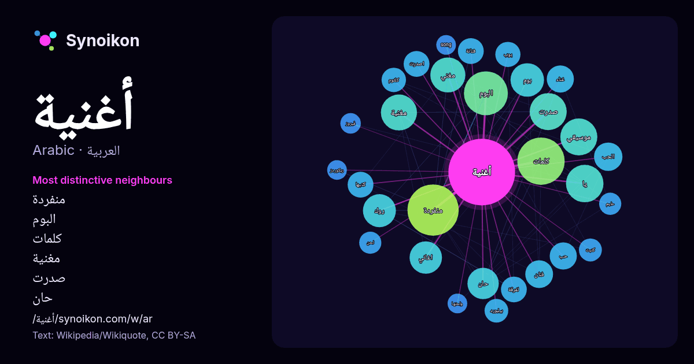

العربية · قائمة كلمات اليوم
أغنية
“song” · الكلمات الموجودة حولها في 1366 ورودًا من ويكيبيديا, Wikiquote.

الجيران الأكثر تميّزًا
- منفردة 64×
- البوم 40×
- كلمات 37×
- مغنية 27×
- صدرت 26×
- حان 25×
- مغني 24×
- يا 24×
- روك 23×
- بوم 23×
- لفرقة 19×
- كلثوم 17×
- الحب 17×
- اغاني 16×
- فنانة 16×
- حب 16×
- كتبها 16×
- غناء 16×
- بيلبورد 15×
- اصدرت 14×
× = كم مرة أكثر مما في نصوص ويكيبيديا العامة.
الجيران الأكثر تكرارًا
- منفردة 75
- كلمات 64
- البوم 55
- عربية 41
- امريكية 40
- يا 40
- صدرت 39
- موسيقي 39
- مغنية 37
- موقع 37
- مغني 35
- بوم 32
- روك 31
- اغاني 30
- عبد 29
- محمد 29
- حان 28
- افضل 27
- فيلم 27
- فرقة 26
في السياق
- 2019-12-08. "معلومات عن أغنية على موقع thesaurus.ascleiden.nl". thesaurus.ascleiden.nl. مؤرشف من الأصل في 2019-12-08. "معلومات عن أغنية على موقع universalis Wikipedia snippets · أغنية
- أغنية مستنياك هي إحدى أشهر الأغنيات العربية؛ غنتها المطربة المغربية عزيزة جلال بعد أغنية هو الحب لعبة وسجلت بالقاهرة بمصر سنة 1983 أي قبل سنتان من اعتزال Wikipedia snippets · مستنياك (أغنية)
- الأغاني المنفردة التي حققت نجاحا باهراً كان أولها فيديو كليب أغنية «واعديني» عام 2009، ثم أغنية «سالينا» سنة 2012 من أول ألبوم منفرد له حمل اسم (ولا عليك) Wikipedia snippets · سعد لمجرد
- عربية على طريقة Slow وهي أغنية (بعترف) 2000. أول مطرب عربي يجمع في أغانيه بين الألحان الشرقية والغربية في نفس الأغنية وهي أغنية (ولا على باله) 2001. أول Wikipedia snippets · عمرو دياب
- 1994 لتكون موديل في فيديو كليب أغنية «يا قصص» للمطربة الوطنية جوليا بطرس. وفي عام 1995 كانت موديل في فيديو كليب أغنية «بحبك حبيبي» للفنان هاني العمري Wikipedia snippets · هيفاء وهبي
- الحب اللي كان هي أغنية من تلحين وتأليف الشاعر بليغ حمدي وغناء ميادة الحناوي وتوزيع الموسيقار عمار الشريعي، صدرت الأغنية لأول مرة في عام (1980) و اعيد إصدارها Wikipedia snippets · الحب اللي كان
- التنزاني رايفاني لإطلاق أول أغنية دولية لها باللغة الإنجليزية بعنوان بيبيتا. وفي أكتوبر 2022، تم اختيارها للمشاركة في أغنية أضيئي السماء الخاصة ببطولة Wikipedia snippets · نورة فتحي
- الأغنية سعد المجرد من الفوز بجائزة موريكس عن أفضل أغنية عربية لسنة 2014. تجاوز عدد المشاهدات الأغنية المليون بعد طرحها في أقل من ثلاثة الأيام على يوتيوب Wikipedia snippets · إنتي (أغنية)
كلمات أخرى
- إله
- تاريخ
- جبل
- جرس
- جزيرة
- جسر
- حديقة
- حصان
- حقيقة
- حياة
- خبز
- خريطة
- خريف
- ذهب
- زمن
- ساعة
- شاي
- شتاء
- صحة
- صحراء
- صمت
- صيف
- طبيعة
- طريق
- طعام
- ظل
- عائلة
- عاصفة
- عسل
- علم
- عمل
- غابة
- فن
- قطار
- قطة
- قلب
- قوة
- كلب
- لغة
- ماء
- مال
- مدينة
- مرآة
- مطر
- ملح
- مناخ
- موت
- نجم
- والدة
حُسبت مسبقًا في 2026-10-09 بالإعدادات الافتراضية (±5 كلمات، مدوّنة متوسطة). يمكن للخريطة التفاعلية تحديثها ببيانات حية.
واجهة مترجمة آليًا؛ نرحب بالتصحيحات.